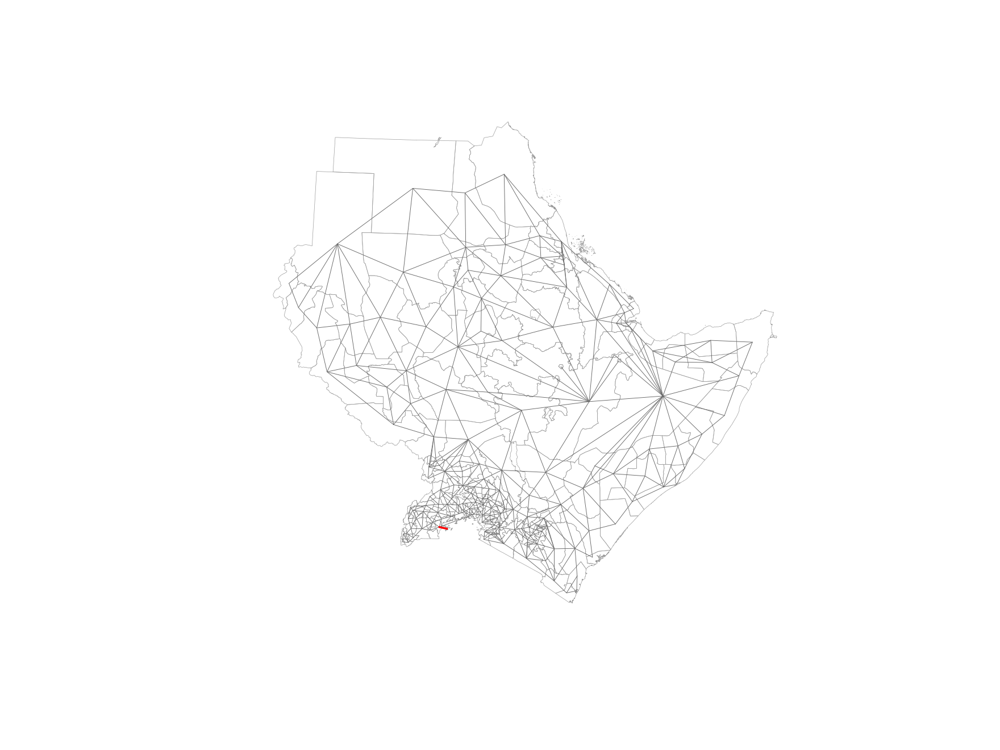
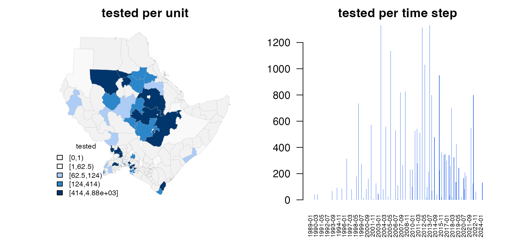
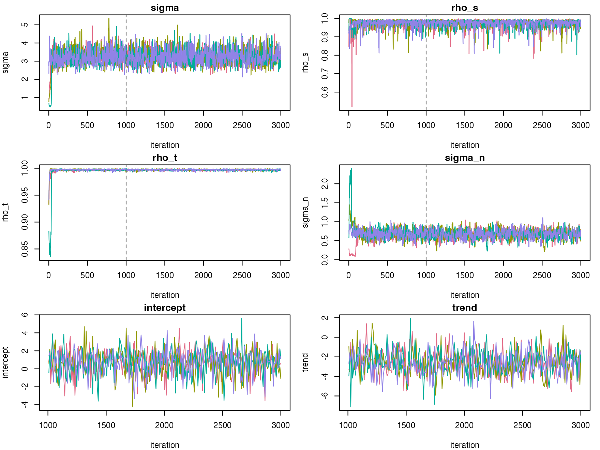
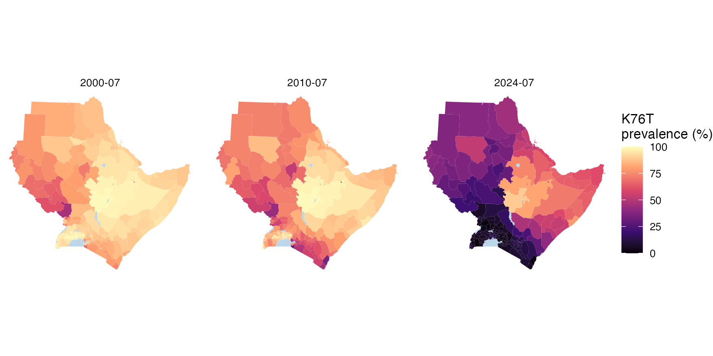
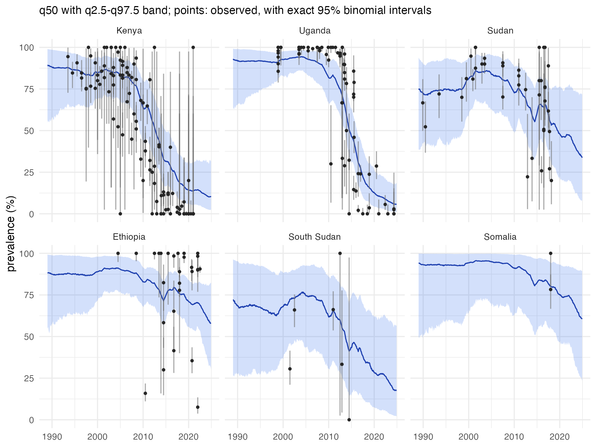
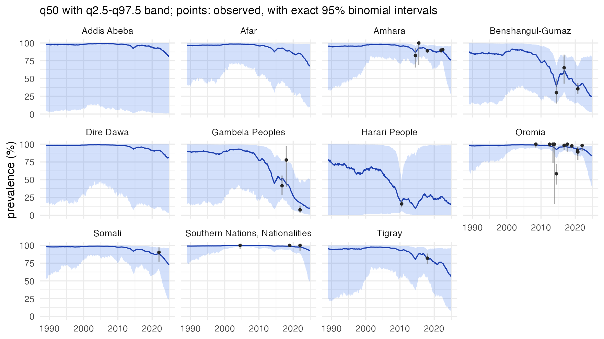
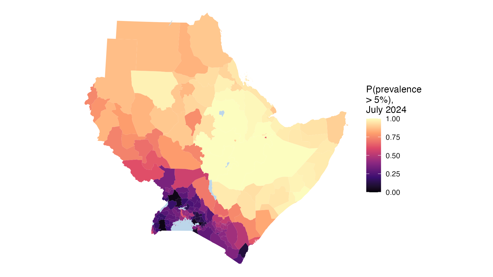
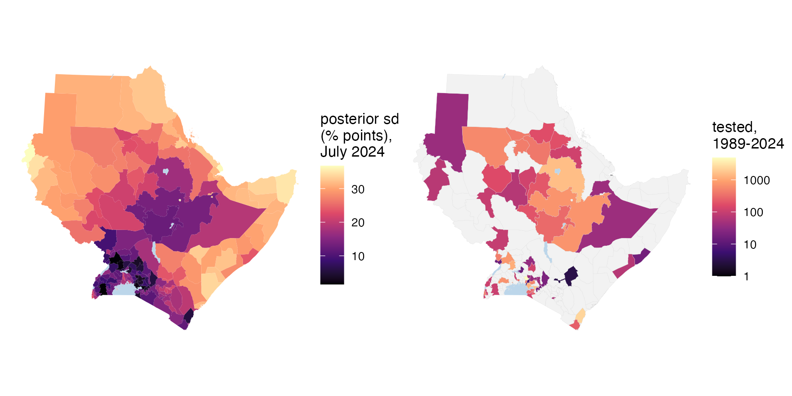

The Plasmodium falciparum crt K76T mutation is the main marker of chloroquine resistance. Chloroquine was replaced as the first-line treatment for falciparum malaria across East Africa between the late 1990s and the mid-2000s, and where it stopped being used the resistant parasites lost their advantage. This tutorial maps K76T month by month across the eight member states of IGAD (Djibouti, Eritrea, Ethiopia, Kenya, Somalia, South Sudan, Sudan and Uganda) from 1989 to 2024, and asks:
- how prevalence changed in each country, with honest uncertainty;
- where the chloroquine-sensitive parasite is now dominant;
- where the data are too thin to say.
1. The data: a STAVE object
STAVE stores studies, surveys and variant counts. The public data set is an R object of a little over 250 kB; reading it needs the STAVE package.
url <- paste0("https://github.com/IDEELResearch/scrub/raw/2d85d021efe1c93dc55300610d944c9fbaf4af1a/",
"analysis/data-out/stave_data_2026.03.17.rds")
tmp <- tempfile(fileext = ".rds")
download.file(url, tmp, mode = "wb", quiet = TRUE)
stave <- suppressWarnings(readRDS(tmp))
stave
#> Studies: 578
#> Surveys: 3848The prevalence of a variant comes from get_prevalence().
It counts every survey that genotyped the codon, whatever format the
study used, including the surveys where the mutant was absent. Setting
return_full = FALSE drops any rows where the
denominator is zero, which is what we want here:
p <- stave$get_prevalence("crt:76:T", return_full = FALSE)
nrow(p)
#> [1] 2819These are the surveys of every country in the data set. Section 3 selects those in the region of interest.
2. The spatial frame
The areas are the first-level administrative units of the eight
countries, from GADM version 4.1,
downloaded with the geodata package.
GADM’s licence allows free academic and other non-commercial use but not
redistribution, so the boundaries are downloaded rather than shipped
with stareal. The low-resolution files
(resolution = 2) are ample for maps at this scale.
iso3 <- c("DJI", "ERI", "ETH", "KEN", "SOM", "SSD", "SDN", "UGA")
adm1 <- sf::st_as_sf(geodata::gadm(iso3, level = 1, path = tempdir(), version = "4.1", resolution = 2))
table(adm1$COUNTRY)
#>
#> Djibouti Eritrea Ethiopia Kenya Somalia South Sudan
#> 6 6 11 47 18 10
#> Sudan Uganda
#> 18 58Uganda’s first level in GADM is its districts, so it has many more units than its neighbours.
Lakes are not places where people live, and GADM treats them inconsistently. Uganda’s parts of Lakes Victoria and Albert are units of their own, while Kenya’s and Ethiopia’s lakes are folded into the surrounding units. Left in, a lake would get a prevalence of its own, or stretch a lakeside unit across the water and make it a neighbour of units on the far shore. So the large lakes are cut out of every unit, using the public-domain lakes of Natural Earth, downloaded with the rnaturalearth package. The cutting is done in an equal-area projection centred on the region, which the frame then keeps for its distances. Note that this step is simply a quirk of us using GADM 4.1 shapefiles - if you use your own shapefile then this should hopefully not be needed.
lakes <- rnaturalearth::ne_download(scale = 10, type = "lakes", category = "physical",
returnclass = "sf", destdir = tempdir())
crs <- "+proj=laea +lat_0=8 +lon_0=37 +units=m" # equal-area, centred on the region
adm1 <- sf::st_make_valid(sf::st_transform(adm1, crs))
lakes <- sf::st_make_valid(sf::st_transform(lakes, crs))
lakes <- lakes[as.numeric(sf::st_area(lakes)) > 1e9, ] # lakes over 1,000 km2
water <- sf::st_intersection(sf::st_union(lakes), sf::st_union(adm1))
adm1 <- sf::st_difference(adm1, water)
adm1 <- adm1[adm1$ENGTYPE_1 != "Water body", ] # what is left of Uganda's lake unitsNow we have a nice clean shapefile
areal_frame() converts a shapefile into the elements
needed by the model. It finds the neighbours of every unit, links any
islands to the nearest unit of the same country, and computes the
eigendecomposition of the graph that the model needs. That is a one-off
step, quick for a few hundred units. With thousands of units, build the
frame once and save it with saveRDS().
fr <- areal_frame(adm1, id = "GID_1", groups = c(country = "COUNTRY"),
link_within = "country", verbose = FALSE)
fr
#> <stareal_frame> 172 units, 432 edges (mean 5.0 neighbours), 1 connected component
#> built from: polygons
#> island links added: 1
#> groupings: country (8)We can visualize the adjacency graph between areas:
plot(fr)
3. The surveys in the region
STAVE treats a survey’s coordinates, not its country name, as the
authoritative record of where it took place. Country names are stored as
free text making them inherently unstable - they vary in spelling, case,
special characters, and may be prone to mistakes. Latitude and longitude
are the fields intended for spatial selection, surveys are therefore
selected by location: those within 10 km of one of the units. Distances
are measured in the frame’s planar projection,
fr$crs_planar. This is the same rule that
areal_data() uses to assign a point just outside every
polygon, such as a coastal site, to the nearest unit.
pts <- sf::st_transform(sf::st_as_sf(p, coords = c("longitude", "latitude"), crs = 4326), fr$crs_planar)
units <- sf::st_transform(adm1, fr$crs_planar)
surveys <- p[lengths(sf::st_is_within_distance(pts, units, dist = 10000)) > 0, ]
nrow(surveys)
#> [1] 328These are exactly the surveys in igad_crt76t, the
example data that ship with stareal:
4. Time, and the survey data
We want to draw inference in monthly steps from 1989 to 2024:
tf <- time_frame(1989, 2024, "month")
tf
#> <stareal_time> monthly steps, 1989-01 to 2024-12 (432 steps)areal_data() puts each survey in a unit and a month, and
pools surveys in the same unit and month. A survey’s month is that of
its collection_day: the middle of its collection window, or
the date the study gave. This is where the areal frame, the time frame,
and the survey data come together.
d <- areal_data(surveys, fr, tf, y = "numerator", k = "denominator",
coords = c("longitude", "latitude"), date = "collection_day")
#> 328 of 328 surveys used, pooled into 264 cells (print the result for the exclusions)
d
#> <stareal_data> 328 of 328 surveys used, pooled into 264 cells
#> 59 of 172 units and 74 of 432 time steps have data (0.36% of the 74,304 area-time cells)
#> tested per cell: median 54, range 1-1,310; total 23,844 tested, 16,978 positive
#> 9 surveys snapped to the nearest unit (max 7.2 km)We can produce a simple plot to see how data are distributed in space and time:
plot(d)
The data are clumped in both space and time. Only 264 of the 74,304 unit-months have data. The model fills the gaps from neighbouring units and months, and presents uncertainty as part of the answer.
5. Fitting
The defaults run four chains of 3,000 iterations, in parallel. This example should take no more than a couple of minutes on a modern laptop:
fit <- fit_areal(d)diagnose() checks the R-hat and effective sample size
(ESS) of every parameter, including the latent prevalence of every
observed cell. We want small R-hat, indicating the MCMC has converged,
but large ESS, indicating it has adequately explored the posterior:
diagnose(fit)
#> <stareal_fit summary> 264 observed cells; 4 chains, 2000 iterations after burn-in
#> hyperparameters from the trace (8000 draws), fixed effects and cells from the 1000 stored draws
#>
#> variable mean sd q2.5 q50 q97.5 rhat ess_bulk ess_tail
#> sigma 3.250 0.37000 2.590 3.230 4.060 1.003 1209 2090
#> rho_s 0.974 0.01870 0.926 0.979 0.993 1.003 1414 1874
#> rho_t 0.997 0.00106 0.995 0.997 0.999 1.004 1353 2014
#> sigma_n 0.668 0.11100 0.441 0.669 0.879 1.005 841 1108
#> intercept 0.709 1.38000 -2.290 0.780 3.220 0.997 1098 993
#> trend -2.570 1.22000 -4.990 -2.610 -0.168 1.001 841 864
#>
#> acceptance after burn-in: centred 0.20, surrogate 0.21; 0.0183 s per iteration
#> latent cells: 264; R-hat over threshold in 0; bulk ESS median 957, min 450; max MCSE of the mean 0.84 (prevalence, %)
#>
#> theta R-hat (max) 1 <= 1.05 ok
#> beta R-hat (max) 1 <= 1.05 ok
#> latent R-hat (max) 1.02 <= 1.05 ok
#> theta bulk ESS (min) 841 >= 400 ok
#> beta bulk ESS (min) 841 >= 400 ok
#> latent bulk ESS (median) 957 >= 100 ok
#>
#> PASSEvery check passes. That is not guaranteed: sparse or mostly-zero
data mix more slowly (see tutorial 2). A
summary() of the fit shows some more detail including
parameter estimates, and a plot() gives a visual check of
the MCMC behaviour:
summary(fit)
#> <stareal_fit summary> 264 observed cells; 4 chains, 2000 iterations after burn-in
#> hyperparameters from the trace (8000 draws), fixed effects from the 1000 stored draws
#>
#> variable mean sd q2.5 q50 q97.5 rhat ess_bulk ess_tail
#> sigma 3.250 0.37000 2.590 3.230 4.060 1.003 1209 2090
#> rho_s 0.974 0.01870 0.926 0.979 0.993 1.003 1414 1874
#> rho_t 0.997 0.00106 0.995 0.997 0.999 1.004 1353 2014
#> sigma_n 0.668 0.11100 0.441 0.669 0.879 1.005 841 1108
#> intercept 0.709 1.38000 -2.290 0.780 3.220 0.997 1098 993
#> trend -2.570 1.22000 -4.990 -2.610 -0.168 1.001 841 864
#>
#> acceptance after burn-in: centred 0.20, surrogate 0.21; 0.0183 s per iteration
#> for every observed cell and a verdict, use diagnose()
plot(fit)
This is good enough for our preliminary analysis. For publishable
results, a longer run gives more draws in the tails of the intervals -
particularly important when calculating exceedance probabilities. With
checkpoint_dir set, an interrupted run picks up where it
stopped when the same call is run again (note, this line will take
longer to run - skip if you just want preliminary results):
fit <- fit_areal(d, control = list(n_iter = 20000, n_burn = 5000, n_store = 250, theta_thin = 10),
checkpoint_dir = "chains/crt76t")How to read the parameters:
-
sigmasets the size of the variation around the trend, on the logit scale. -
rho_sclose to 1 means neighbouring units are strongly alike. -
rho_tis the correlation from one month to the next. Close to 1, as here, prevalence changes slowly. -
sigma_nis the scatter between unit-months, beyond what the field explains (different sites, sampling, methods). -
interceptis the logit prevalence at the middle of the window, before the field. -
trendis half the change in logit prevalence over the window, before the field. A strongly negative value is the regional decline.
6. Predicting the full surface
predict() reconstructs the prevalence of every unit in
every month, once per posterior draw, and aggregates each draw to the
countries. Country estimates here are unweighted means over their units;
with population or parasite-burden data you can give them as
weights.
pr <- predict(fit, groups = "country", exceedance = 5)
pr
#> <stareal_pred> 172 areas x 432 time steps from 1000 posterior draws
#> aggregated to: country (8) (equal weights)
#> statistics: mean, sd, q2.5, q50, q97.5, p_gt_5
#> tables: $area, $groups$countryMaps for three months, made with sf::st_as_sf(), which
joins one month’s estimates to the polygons, with the lakes cut out
earlier drawn as water:
months <- c("2000-07", "2010-07", "2024-07")
m <- do.call(rbind, lapply(months, function(t) sf::st_as_sf(pr, time = t)))
ggplot(m) +
geom_sf(aes(fill = mean), colour = NA) +
geom_sf(data = sf::st_sf(water), fill = "#bcd6ea", colour = NA) +
facet_wrap(~time) +
scale_fill_viridis_c("K76T\nprevalence (%)", limits = c(0, 100), option = "magma") +
theme_void()
We can also look at trends over time. The next plot gives country trends, with the 95% interval as a shaded ribbon, and the data overlaid for comparison (exact 95% binomial interval from raw survey data). The data are from surveyed units only, while the band covers the whole country, so the two need not agree where few units are surveyed.
plot(pr, group = "country", ids = c("Kenya", "Uganda", "Sudan", "Ethiopia", "South Sudan", "Somalia"))
Kenya and Uganda tell the clearest story. K76T was common, above 80%, until the late 2000s, then fell, to around 10% by 2024. Sudan’s decline is slower and less certain. Ethiopia is different: its surveys up to 2022 still find K76T in most infections. Ethiopia still treats P. vivax malaria with chloroquine, a likely reason. After its last surveys, the country’s band drifts down with the trend of the region as a whole. The model has one trend for all eight countries, so it extrapolates the region’s decline into a country that may not share it. Tutorial 3 gives countries trends of their own. In Somalia, with two surveys, and South Sudan, with six and none since 2014, the estimates lean on the neighbours and the regional trend, and the bands are wide.
We can also dig into the trends within sub-national regions. For example, the next plot shows trends for all 11 tier-one subdivisions of Ethiopia:

We see very different trends in the West (e.g. Gambela) compared with the East (e.g. Oromia).
7. Probability statements, and where the data run out
The posterior answers questions directly. Where is K76T still above
5%? predict() was asked for that probability with
exceedance = 5 (in percent, like every prevalence in
stareal), and reports it as p_gt_5:
m24 <- sf::st_as_sf(pr, time = "2024-07")
ggplot(m24) +
geom_sf(aes(fill = p_gt_5), colour = NA) +
geom_sf(data = sf::st_sf(water), fill = "#bcd6ea", colour = NA) +
scale_fill_viridis_c("P(prevalence\n> 5%),\nJuly 2024", limits = c(0, 1), option = "magma") +
theme_void()
The units by how sure the model is, country by country: probably above 5% (a probability over 0.9), probably below (under 0.1), or uncertain:
m24$call <- cut(m24$p_gt_5, c(0, 0.1, 0.9, 1), include.lowest = TRUE,
labels = c("probably below", "uncertain", "probably above"))
table(m24$country, m24$call)
#>
#> probably below uncertain probably above
#> Djibouti 0 1 5
#> Eritrea 0 0 6
#> Ethiopia 0 2 9
#> Kenya 3 41 3
#> Somalia 0 1 17
#> South Sudan 0 10 0
#> Sudan 0 14 4
#> Uganda 3 53 0K76T is probably still above 5% across the Horn: in most units of Ethiopia, Eritrea, Somalia and Djibouti. Ethiopia’s recent surveys find it common, and its neighbours, with few or no surveys of their own, borrow from them. In Kenya and Uganda, where it fell furthest, most units are uncertain. Their prevalence, around 5 to 10%, sits close to the threshold, and only 6 units in the whole region are probably below it. A low threshold is a demanding question: saying with confidence that prevalence is below 5% takes many recent surveys that find little.
Uncertainty is not uniform. The posterior standard deviation in July 2024, beside the total number tested in each unit over the whole period:
m24$tested <- tapply(pr$area$k, pr$area$id, sum)[m24$id]
m24$tested[m24$tested == 0] <- NA
g1 <- ggplot(m24) + geom_sf(aes(fill = sd), colour = NA) +
geom_sf(data = sf::st_sf(water), fill = "#bcd6ea", colour = NA) +
scale_fill_viridis_c("posterior sd\n(% points),\nJuly 2024", option = "magma") + theme_void()
g2 <- ggplot(m24) + geom_sf(aes(fill = tested), colour = "grey85", linewidth = 0.05) +
geom_sf(data = sf::st_sf(water), fill = "#bcd6ea", colour = NA) +
scale_fill_viridis_c("tested,\n1989-2024", trans = "log10", na.value = "grey95", option = "magma") +
theme_void()
patchwork::wrap_plots(g1, g2)
The median standard deviation by country:
round(tapply(m24$sd, m24$country, median), 2)
#> Djibouti Eritrea Ethiopia Kenya Somalia South Sudan
#> 31.76 32.05 21.50 14.90 31.29 22.54
#> Sudan Uganda
#> 28.72 11.59Where there are few or no surveys, as in Djibouti, Eritrea, Somalia and much of Sudan, the median standard deviation is about 30 percentage points, against 12 in Uganda and 15 in Kenya. A map of the posterior mean alone would hide this.
8. Taking the results away
The tables are ordinary data frames, and the maps ordinary
sf objects:
write.csv(pr$area, "crt76t_by_unit_month.csv", row.names = FALSE)
write.csv(pr$groups$country, "crt76t_by_country_month.csv", row.names = FALSE)
sf::st_write(sf::st_as_sf(pr, time = "2024-07"), "crt76t_2024-07.gpkg")The posterior draws of the parameters and of every observed cell are
available for your own summaries with
posterior::as_draws_df(fit).
What next
- 2. Rare and emerging markers: k13 R561H in East Africa, where most surveys find nothing.
- Method: what the model is, and how it is fitted.